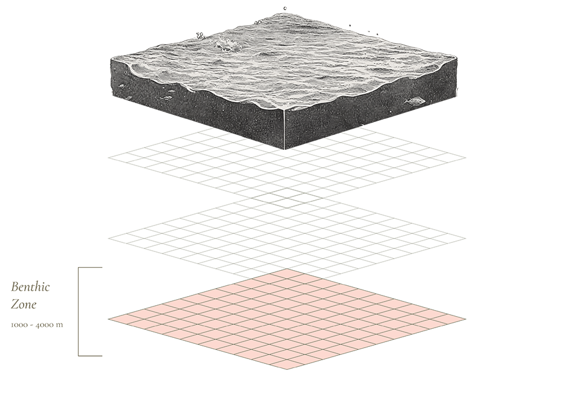
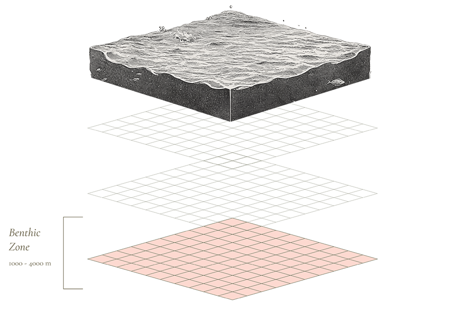

By Steph W & Ian Y
Data from Smithsonian Invertebrate Zoology Dept.
Published on Oct 12 2024
CORAL CHRONICLES
A visual journey through the vertical habitats of earth's ocean architects


What do we know about Corals?
Coral reefs play an essential role in maintaining the health of our oceans and supporting human life. Coral reefs also protect coastlines from erosion and storm surges, acting as natural barriers. Moreover, they contribute to tourism and offer potential medicinal compounds. Their preservation is critical, as they are both a source of life and a shield for coastal communities.
 
